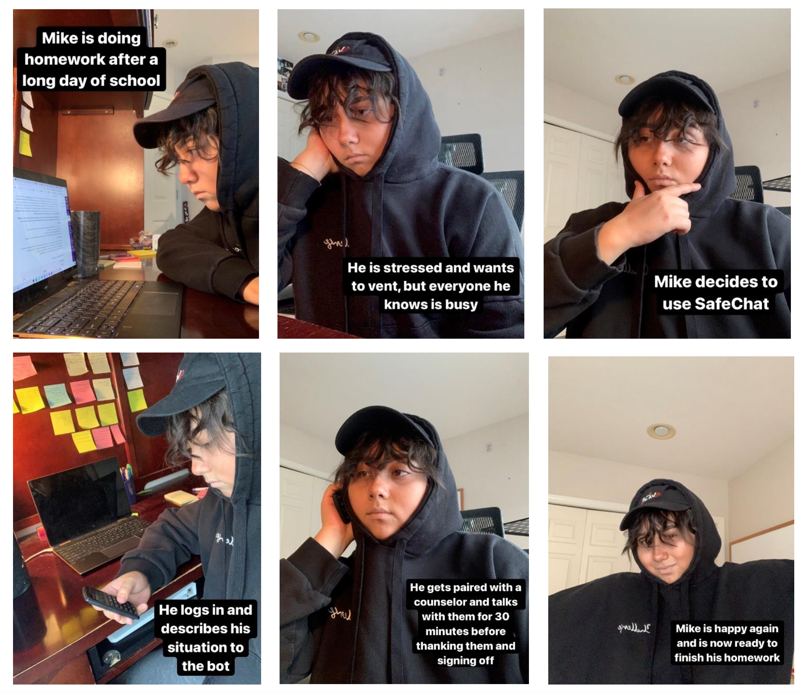
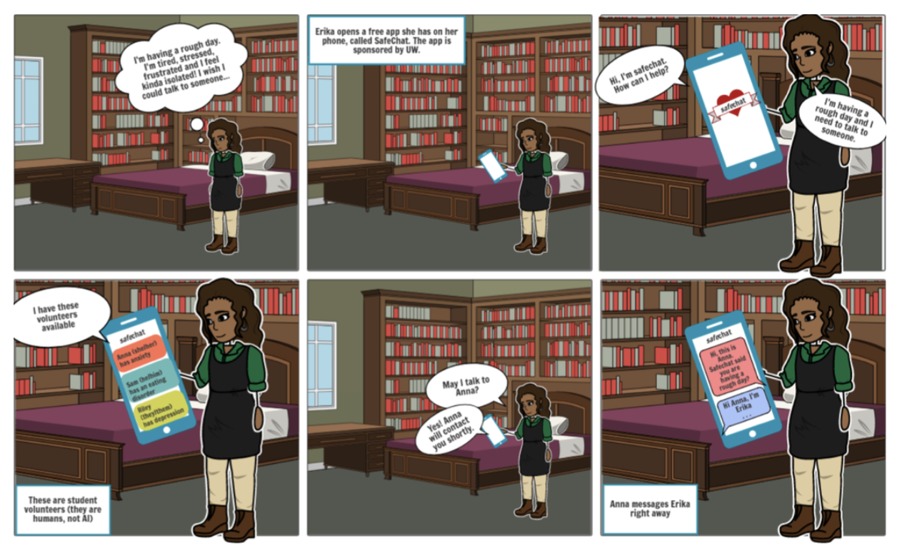
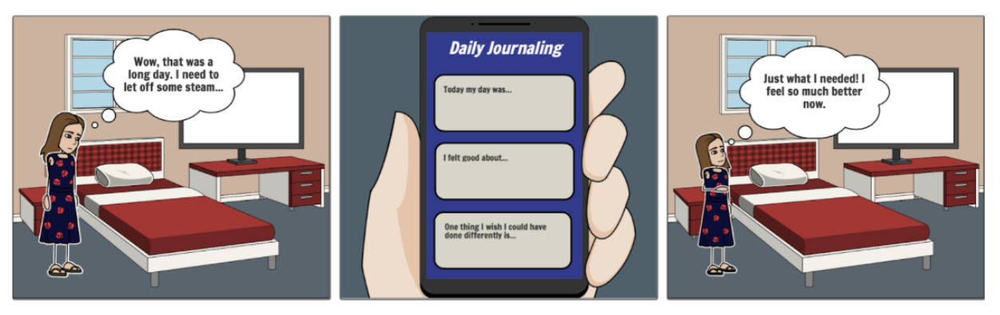

My independent redesign process highlighted the significance of iterative design, incorporating new insights to refine both aesthetics and usability. Collaborative efforts proved rewarding, showcasing the power of teamwork in shaping SafeChat into a refined, user-centric platform.
Our project underscored the importance of inclusivity and accessibility. While our personas were diverse, we recognized the need for broader user group representation. A more extensive user research phase would have ensured a more inclusive design.
The design journey was a learning curve, emphasizing the value of upfront work in the low-fidelity stage, user feedback, and robust usability testing. Challenges emerged from inexperience, particularly in translating insights into personas and AI-based support. However, adapting to user concerns led to a successful pivot in the design process.


Our team developed high-fidelity prototypes, undergoing significant iterations to enhance visual appeal and user interactions. Later, I undertook an independent iterative redesign, focusing on refining the UI and improving user experience.
I annotated each wireframe, providing an in-depth depiction of the app's functionalities and interactions.

We crafted low-fidelity wireframes in Figma to visualize SafeChat's interface structure. Utilizing simple shapes and basic elements, they outlined the layout and placement of key features within the app.

I used pencil-and-paper sketches to brainstorm and conceptualize ideas, capturing initial thoughts and design elements for the app's interface.
Storyboard Created with Images, where I dressed up as Mike
Storyboard Created with Storyboard That
Storyboard Created with Storyboard That
Visual storyboards outlined crucial user moments and emotions throughout SafeChat's mental health support journey.
To capture Mike's experience, we created a user journey map that highlighted his emotions, pain points, and moments of satisfaction while engaging with SafeChat.
Lack of awareness about available resources
Accessibility barriers including cost and availability
A
preference for indirect communication channels
Skepticism toward AI-based mental health support
Our research delved into the hurdles university students encounter when seeking mental health resources. Through in-depth user interviews, we discovered prevalent issues: